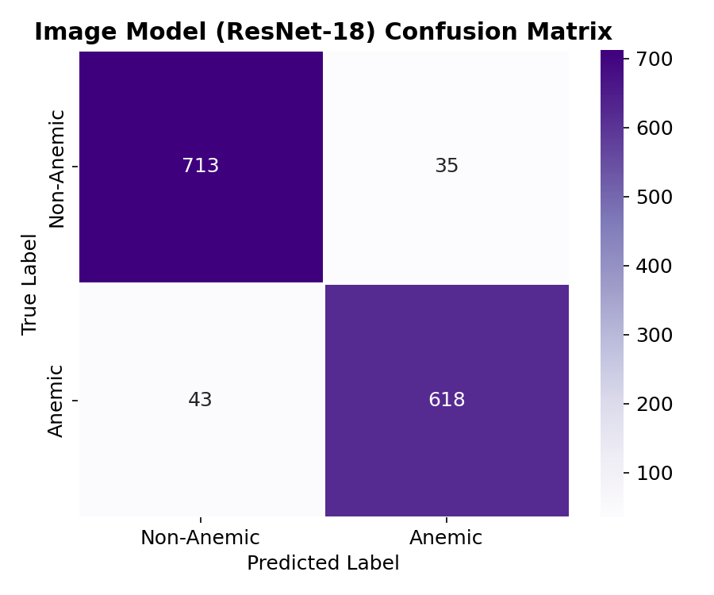
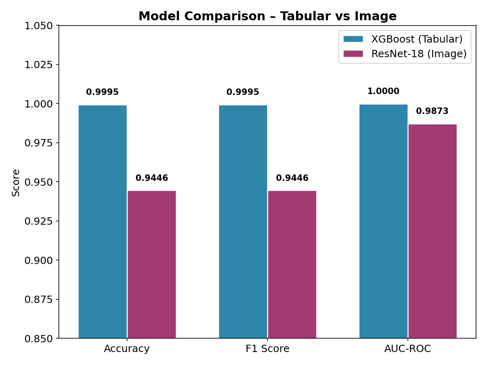

Multimodal Deep Learning Project Report
Generated on: 2026-10-02 14:06:33
| Modality | Dataset Name | Source | Volume |
|---|---|---|---|
| Tabular | CBC Analysis | Kaggle | 103,221 records |
| Tabular | Maternal Health & High-Risk Pregnancy | Mendeley | 1,179 records |
| Image | Nail & Conjunctival Anemia Images | Kaggle | 7,041 images |
*Note: DHS Birth Recode data is downloaded but reserved for future large-scale pretraining.
Trained on combined blood count features (HGB, RBC, WBC, etc.) and maternal vitals to predict anemia risk.
Fine-tuned on labeled palpebral conjunctiva and nail bed images to detect visual signs of anemia.


Both models demonstrate exceptional performance on their respective modalities. The tabular XGBoost model achieves near-perfect accuracy (99.95%) utilizing critical clinical features like Hemoglobin (HGB). The ResNet-18 visual model provides a highly robust non-invasive alternative, achieving 94.46% accuracy using just smartphone-captured images of eyes and nails.
Next Steps for Research Paper:
xgb_tabular.json and image_model_best.pt) via a web interface for clinical testing.